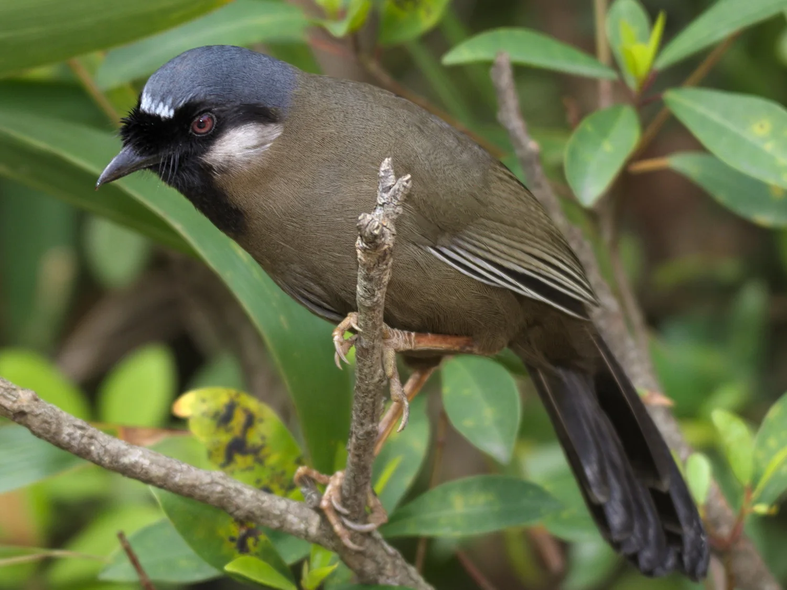

Back to the indexNO. 052 · Songbirds & City Birds / Leiothrichidae · Laughingthrushes
Black-throated Laughingthrush
黑喉噪鹛 · hēi hóu zào méi Pterorhinus chinensisThe southern laughingthrush that actually laughs
Black throat, white cheeks, grey crown, brown body — the colours arranged like a mask. What it is famous for is not its looks but a loud series of notes that sounds like a group of people roaring with laughter.
Gallery
One scientific illustration for shape and colour blocks, two field photographs for how it looks in real light. Click any image to enlarge.
Identification
- HeadCrown and nape grey, cheeks and ear-coverts white, throat black — the 'black throat, white face' contrast.
- PlumageUpperparts brown, underparts pale brown, undertail coverts chestnut; soft-toned overall.
- BillBlack, stout and slightly downcurved.
- ShapeHeavier than Chinese Hwamei, with a long tail; usually moves through thickets in small parties.
Behaviour
Secretive but fond of calling, moving in parties of three to eight through bamboo and scrub, turning over litter for insects and fruit. More dependent than Chinese Hwamei on dense bamboo and evergreen thicket. A resident in South China, mostly at forest edge and in gullies.
Voice
Highly distinctive: a loud run of 'wi-ki-ki-ki' or 'ho-ho-ho', accelerating and rising in pitch, like a group of people laughing in the distance — the most effective clue to its presence.
Where to find it in Zhuhai
- Fenghuang Hill bamboo
- Banzhang Hill scrub
- Doumen hills
- Qi'ao Island forest edges